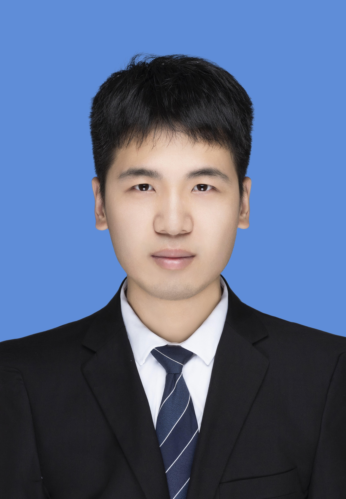

量子机器学习
量子增强分类、特征学习与优化。

1
量子增强分类、特征学习与优化。
面向复杂、异构和噪声数据的鲁棒学习方法。
自适应邻域建模与高效 kNN 分类。
稀疏特征选择、图构建与结构学习。
2
IEEE Transactions on Computer-Aided Design of Integrated Circuits and Systems, 45(7), 3346–3359, 2026.
IEEE Transactions on Computer-Aided Design of Integrated Circuits and Systems, 2025.
IEEE TCAD, 44(7), 2613–2626, 2025.
ACM Transactions on Autonomous and Adaptive Systems, 20(1), 2025.
IEEE TCAD, 43(5), 1332–1345, 2024.
IEEE Transactions on Computers, 73(9), 2233–2247, 2024.
ACM Transactions on Knowledge Discovery from Data, 18(8), 1–28, 2024.
IEEE Transactions on Knowledge and Data Engineering, 35(3), 2711–2723, 2023.
IEEE Transactions on Knowledge and Data Engineering, 35(7), 7382–7396, 2023.
* 通讯作者 · # 共同第一作者
Hang Xu, Jiaye Li*, Hao Yu, Jian Zhang, and Shichao Zhang. “Noise-Tolerant Multi-View Feature Selection.” Knowledge and Information Systems, 68, 61. CCF B
Jiagang Song, Hang Xu, Jiaye Li*, and Shichao Zhang. “Demand-Driven kNN Classification.” Knowledge-Based Systems, 327, 114090. 中科院一区
Hang Xu and Jiaye Li*. “Efficient Discriminative Feature Selection With Grouping Relative Comparison.” Chinese Conference on Pattern Recognition and Computer Vision (PRCV), 81–96.
Jiaye Li, Hang Xu, Hao Yu, Weixin Li, and Shichao Zhang*. “Anti-Noise Multi-View Feature Selection With Sample Constraints.” IEEE International Conference on Data Mining (ICDM), 259–268. CCF B
Shichao Zhang, Jiaye Li*, Wenzhen Zhang, and Yongsong Qin. “Hyper-Class Representation of Data.” Neurocomputing, 503, 200–218. JCR 一区
Jiaye Li, Hang Xu, Hao Yu*, Zhihao Jiang, and Lei Zhu. “Multi-Modal Feature Selection With Anchor Graph for Alzheimer’s Disease.” Frontiers in Neuroscience.
Jiangzhang Gan#, Jiaye Li#, and Yangcai Xie. “Robust SVM for Cost-Sensitive Learning.” Neural Processing Letters, 54(4), 2737–2758.
Jiaye Li, Shichao Zhang, Leyuan Zhang, Cong Lei, and Jilian Zhang. “Unsupervised Nonlinear Feature Selection Algorithm via Kernel Function.” Neural Computing and Applications, 32(11), 6443–6454.
Jiaye Li#, Lin Wu#, Guoqiu Wen, and Zhi Li. “Exclusive Feature Selection and Multi-View Learning for Alzheimer’s Disease.” Journal of Visual Communication and Image Representation, 102605.
Jiaye Li, Hao Yu, Leyuan Zhang, and Guoqiu Wen. “Double Weighted K-Nearest Voting for Label Aggregation in Crowdsourcing Learning.” Multimedia Tools and Applications, 78(23), 33357–33374.
李佳烨, 张乐园, 雷聪. “基于核函数的低秩非线性属性选择算法.” 计算机工程与设计, 40(9), 2537–2543, 2563.
李佳烨, 余浩. “基于K近邻的众包数据分类算法.” 计算机应用研究. doi: 10.19734/j.issn.1001-3695.2018.09.0736.
李佳烨, 张乐园, 雷聪, 甘江璋, 吕治政. “基于局部结构学习的非线性属性选择算法.” 计算机应用研究. doi: 10.19734/j.issn.1001-3695.2018.07.0524.
Jiaye Li, Xiaofeng Zhu, Jiangzhang Gan, Leyuan Zhang, Shanwen Zhang, and Shichao Zhang. “Unsupervised Feature Selection Algorithm via Local Structure Learning and Kernel Function.” 18th International Conference on Electronic Business, 721–730. 最佳论文奖.
Hao Yu, Jiaye Li, and Shichao Zhang. “Self-Paced Learning for Crowdsourcing.” Information Fusion, 104364. 中科院一区
Hao Yu, Shichao Zhang, Jiaye Li, and Chengqing Li. “Semi-Supervised Majority Voting for Crowdsourcing.” Information Fusion, 125(1), 1–15. 中科院一区
Wenzhen Zhang, Debo Cheng, Jiaye Li, and Shichao Zhang. “One-Step Negative Learning via Structured Suppression for Robust Classification With Noisy Labels.” Knowledge-Based Systems, 335, 115173. 中科院一区
Ziyue Wang, Zhiwei Ye, Gongsheng Yuan, Mengying Zhu, Jiaye Li, Guanjie Cheng, and Ling Qian. “Scalable Hybrid Quantum-Classical Optimization for the Traveling Salesman Problem.” 3rd Workshop on Quantum Computing and Quantum-Inspired Technology for Data-Intensive Systems and Applications, 1–2.
Wenzhen Zhang, Debo Cheng, Guangquan Lu, Bo Zhou, Jiaye Li, and Shichao Zhang. “Efficient Adaptive Label Refinement for Label Noise Learning.” Neurocomputing, 639, 130305.
Hao Yu, Chengyuan Zhang, Jiaye Li, and Shichao Zhang*. “Robust Sparse Weighted Classification for Crowdsourcing.” IEEE Transactions on Knowledge and Data Engineering. CCF A
Hao Yu, Jiaye Li, Zhaojiang Wu, Hang Xu, and Lei Zhu*. “Two-Step Learning for Crowdsourcing Data Classification.” Multimedia Tools and Applications.
Bo Zhou, Yangding Li, Xincheng Huang, and Jiaye Li. “Self-Adaptive Clustering of Dynamic Multi-Graph Learning.” Neural Processing Letters, 54(4), 2533–2548.
许航, 张师超, 吴兆江, 李佳烨. “噪音数据的属性选择算法.” 软件学报, 32(11), 3440–3451.
Xiaofeng Zhu, Jiangzhang Gan, Guangquan Lu, Jiaye Li, and Shichao Zhang. “Spectral Clustering via Half-Quadratic Optimization.” World Wide Web, 23(3), 1969–1988.
Linjun Chen, Guangquan Lu, Yangding Li, Jiaye Li, and Malong Tan. “Local Structure Preservation for Nonlinear Clustering.” Neural Processing Letters.
Pengqing Li, Xuelian Deng, Leyuan Zhang, Jiangzhang Gan, Jiaye Li, and Yonggang Li. “Sparse Learning Based on Clustering by Fast Search and Find of Density Peaks.” Multimedia Tools and Applications.
Leyuan Zhang, Yangding Li, Jilian Zhang, Pengqing Li, and Jiaye Li. “Nonlinear Sparse Feature Selection Algorithm via Low Matrix Rank Constraint.” Multimedia Tools and Applications, 78, 33319–33337.
Shanwen Zhang, Meiling Liu, Jiaye Li, and Leyuan Zhang. “An Efficient Feature Selection Algorithm Based on Kernel Function.” IEEE Symposium Series on Computational Intelligence, 2649–2655.
Linjun Chen, Guangquan Lu, Guoqiu Wen, Jiaye Li, and Malong Tan. “A Nonlinear Clustering Algorithm via Kernel Function and Locality Structure Learning.” IEEE Symposium Series on Computational Intelligence, 2603–2607.
Leyuan Zhang, Meiling Liu, Rifeng Wang, Tingting Du, and Jiaye Li. “Multi-View Unsupervised Feature Selection With Dynamic Sample Space Structure.” IEEE Symposium Series on Computational Intelligence, 2641–2648.
3
浙江省科协青年人才托举培养项目
量子计算增强的多级融合分类模型中国博士后科学基金第 78 批面上项目，主持，项目编号：2025M781521
量子计算驱动的数据选择模型研究国家资助博士后研究人员计划 C 档，资助编号：GZC20251062
4
基于量子卷积神经网络的数据特征提取方法和装置中国发明专利，CN202511038408.2（已授权）
5
博士生国家奖学金
硕士生国家奖学金
第十八届国际电子商务会议最佳论文奖
6
计算机科学与技术 · 博士后 · 合作导师：陈刚教授
计算机科学与技术 · 博士 · 导师：张师超教授
计算机科学与技术 · 硕士 · 导师：张师超教授
计算机科学与技术 · 学士